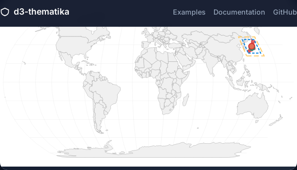
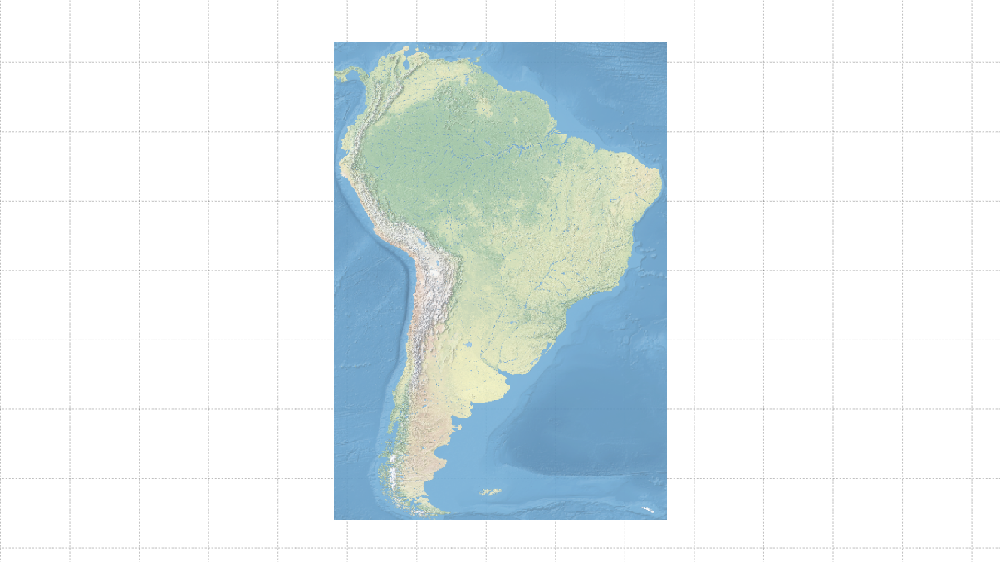

Examples Gallery
d3-thematikaの豊富なサンプル集で、美しい主題図の作成方法を学びましょう
15+
サンプル数
5
カテゴリー
20+
レイヤータイプ
∞
可能性
基本レイヤー
3 examples
ポイントレイヤー
4 examples

ラインレイヤー
2 examples
統合デモ
1 example
エフェクト・ユーティリティ
6 examples
クリップポリゴン
ポリゴンの形状でマップをクリップする機能のデモ。特定の領域のみを表示したい場合に使用。

GISユーティリティ
地理空間データ処理のユーティリティ関数の使用例。座標変換や距離計算など。

COGレイヤー
Cloud Optimized GeoTIFF (COG) データの表示と処理のデモ。大容量地理空間ラスターデータの効率的な読み込み。

タイル地図
タイル地図システムのデモ。Web地図タイルの表示とタイル座標計算ユーティリティの使用例。
カラーパレットショーケース
科学的に検証されたColorBrewer、Viridis、CARTOパレットの展示と色覚アクセシビリティ機能のデモ。

プレイグラウンド
複数の機能を組み合わせた実験的なデモ。新しいアイデアやテスト用。